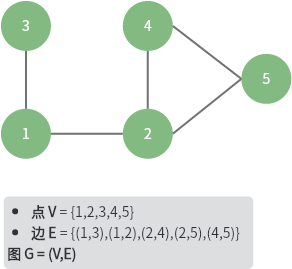
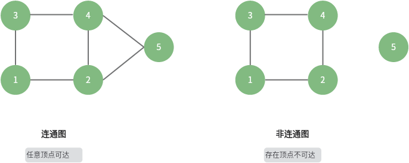
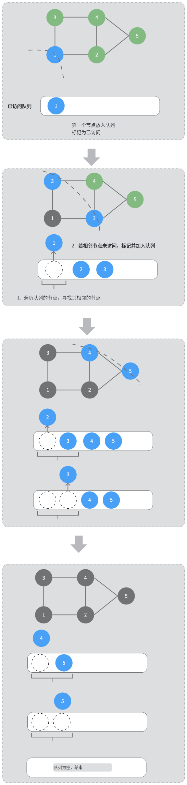
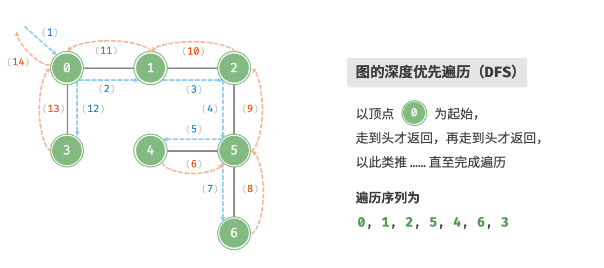

图「学习」
图
概念
定义：G = (V, E)

图的分类




表示
- 顺序
- 链式
一个无向图的例子，展示如何用「邻接矩阵」和「邻接表」来表示一个图：
邻接矩阵中保存着很多不存在的边，由于二维数组的连续性，会浪费很多空间，但是查询速度快 O(1)；在邻接表中，采用了一个数组来保存图的所有点，每个元素扩展成一个链表，只保存存在的边，节省空间，但是查询效率 O(n)，可以通过一些手段来优化这个链表，比如将链表转化为 AVL 或者 红黑树，查询效率能够优化到 O(logn)，或者采用哈希表，再将时间复杂度降至 O(1)
使用 map 实现无向图
type vertex struct {
val int
}
/* 基于邻接表实现的无向图 */
type graphAdjMp struct {
adjMp map[vertex]map[vertex]struct{}
}
func (g *graphAdjMp) addVertex(v vertex) {
if _, ok := g.adjMp[v]; ok {
// 该顶点已经存在，无需重复加入
return
}
// 新加一个节点，以及初始化一个链表
g.adjMp[v] = map[vertex]struct{}{}
}
func (g *graphAdjMp) deleteVertex(v vertex) {
if _, ok := g.adjMp[v]; !ok {
// 节点是不存在的
return
}
/* 1.删除顶点 */
delete(g.adjMp, v)
/* 2.删除其他顶点中与之存在的关联 */
for _, rt := range g.adjMp {
delete(rt, v)
}
}
func (g *graphAdjMp) addEdge(v1, v2 vertex) {
_, ok1 := g.adjMp[v1]
_, ok2 := g.adjMp[v2]
if !ok1 || !ok2 || v1 == v2 {
log.Fatal("add edge error")
}
g.adjMp[v1][v2] = struct{}{}
g.adjMp[v2][v1] = struct{}{}
}
func (g *graphAdjMp) deleteEdge(v1, v2 vertex) {
_, ok1 := g.adjMp[v1]
_, ok2 := g.adjMp[v2]
if !ok1 || !ok2 || v1 == v2 {
log.Fatal("delete edge error")
}
delete(g.adjMp[v1], v2)
delete(g.adjMp[v2], v1)
}
// newGraphAdjMp 使用边来初始化一个图
// edges 的形式应该是 [(v1,v2),(v1,v3)...]
func newGraphAdjMp(edges [][]vertex) *graphAdjMp {
g := &graphAdjMp{
adjMp: make(map[vertex]map[vertex]struct{}),
}
for _, e := range edges {
g.addVertex(e[0])
g.addVertex(e[1])
g.addEdge(e[0], e[1])
}
return g
}
func (g *graphAdjMp) print() {
if g.adjMp == nil {
fmt.Println("graph is nil")
}
for vt, toMp := range g.adjMp {
fmt.Print("vertex#", vt, "have edge: ")
for toVt := range toMp {
fmt.Print("(", vt.val, toVt.val, ")")
}
fmt.Println()
}
}
图的遍历
深度优先（DFS）

func (g *graphAdjMp) dfs(startVt vertex) []vertex {
visited := make(map[vertex]struct{})
var visitRst []vertex
g.dfsHelper(startVt, visited, &visitRst)
return visitRst
}
func (g *graphAdjMp) dfsHelper(startVt vertex, visited map[vertex]struct{}, visitRst *[]vertex) {
*visitRst = append(*visitRst, startVt)
visited[startVt] = struct{}{}
for toVt := range g.adjMp[startVt] {
if _, ok := visited[toVt]; ok {
continue
}
g.dfsHelper(toVt, visited, visitRst)
}
}
广度优先（BFS）

func (g *graphAdjMp) bfs(startVt vertex) []vertex {
if g.adjMp == nil {
fmt.Println("graph is nil")
}
var queue []vertex
visited := make(map[vertex]struct{})
var visitRst []vertex
// visitRst 用来存储访问结果
visitRst = append(visitRst, startVt)
// 标记已经访问
visited[startVt] = struct{}{}
queue = append(queue, startVt)
for len(queue) > 0 {
cur := queue[0]
queue = queue[1:]
// 遍历相邻节点，如果还没访问，就访问，并加入队列
for toVt, _ := range g.adjMp[cur] {
if _, ok := visited[toVt]; ok {
// 节点已经访问过，跳过
continue
}
visitRst = append(visitRst, toVt)
visited[toVt] = struct{}{}
queue = append(queue, toVt)
}
}
return visitRst
}
时间复杂度，所有的节点都会入队列一次，时间 O(|V|)，每条边都会遍历两次，时间 O(2|E|)，总的时间复杂度 O(|V|+|E|)
- https://www.hello-algo.com/chapter_graph/graph_traversal/#932